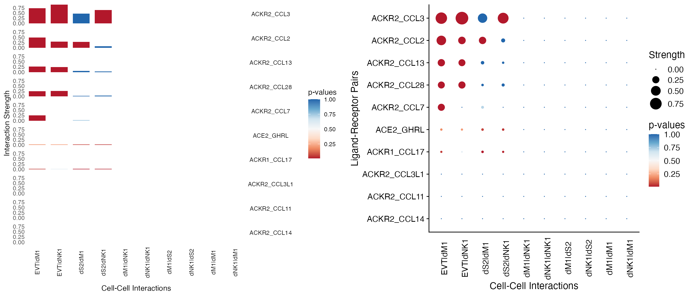
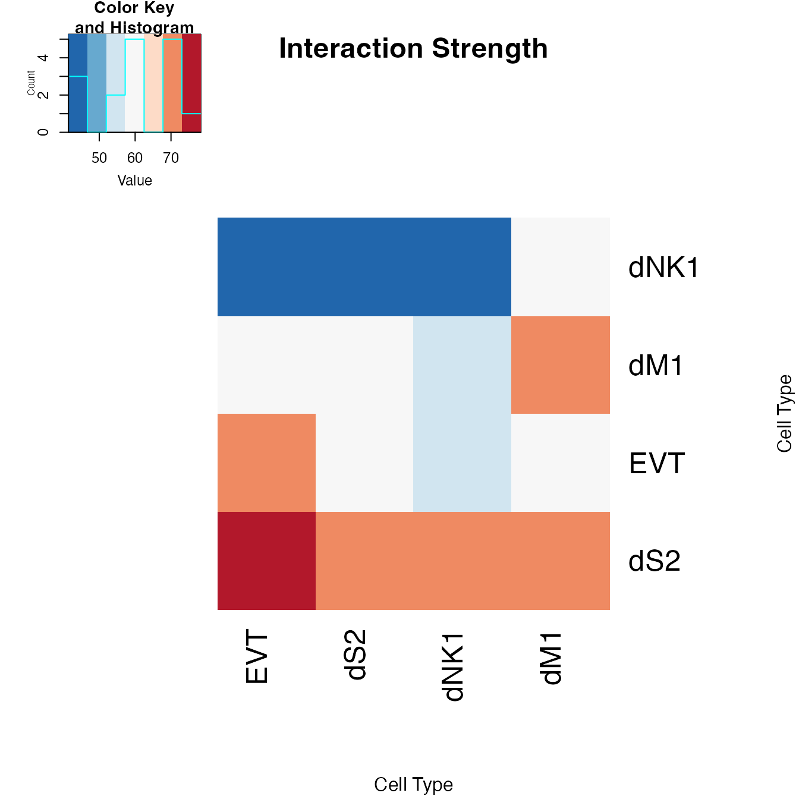
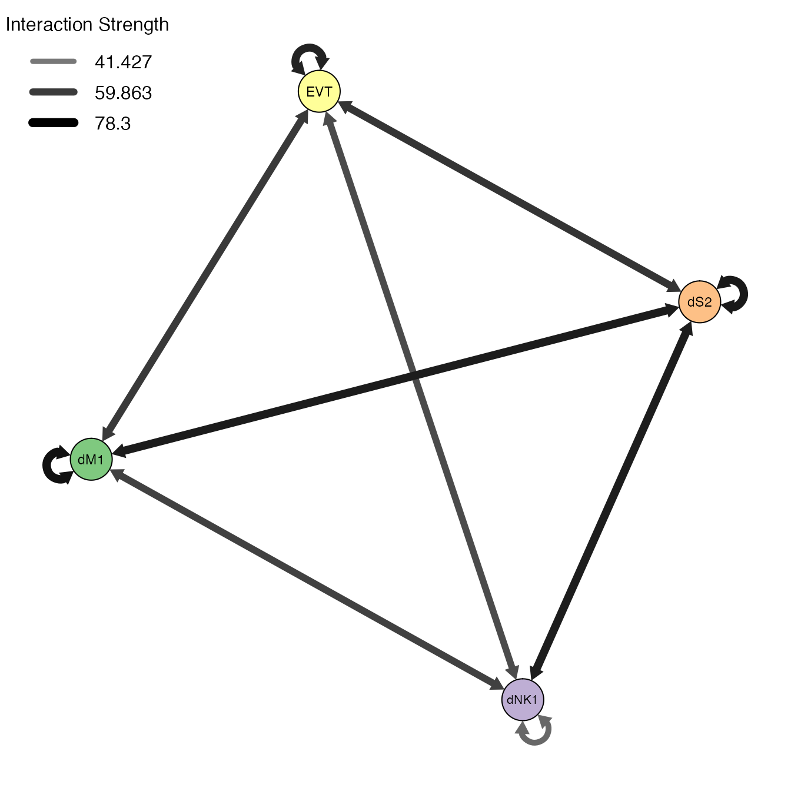
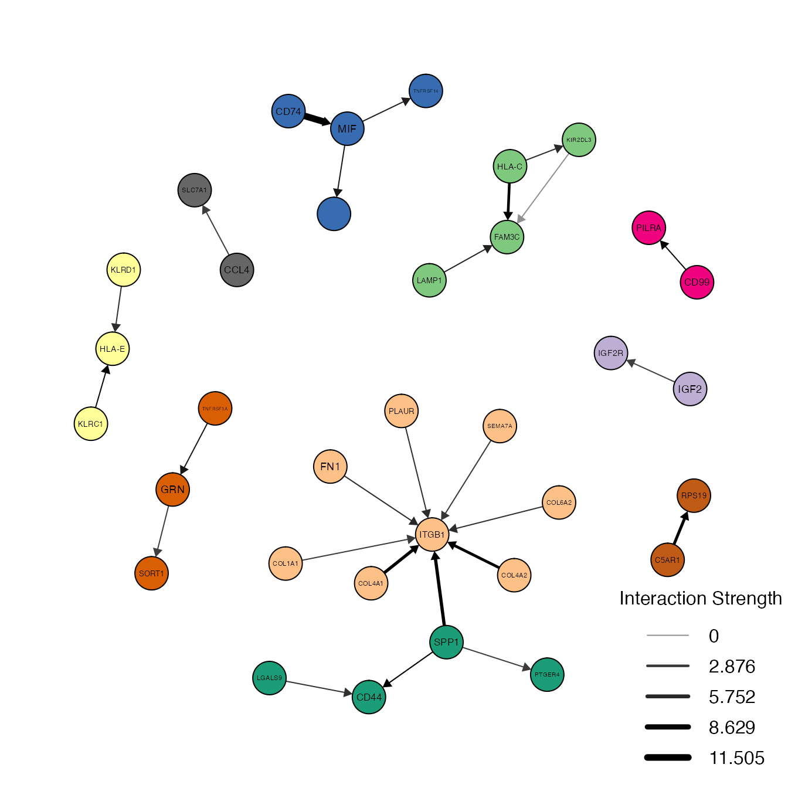
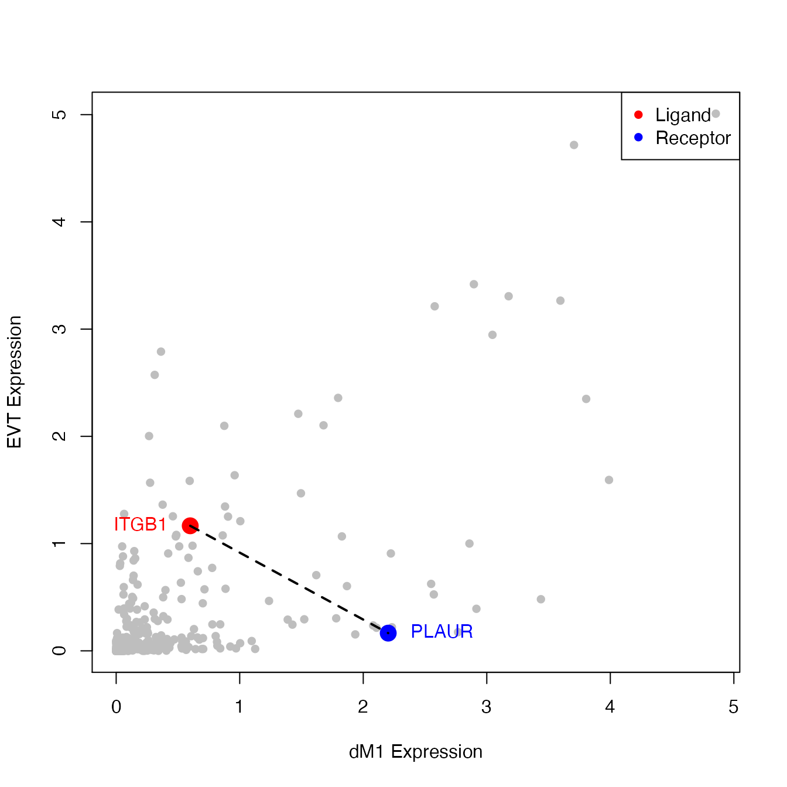
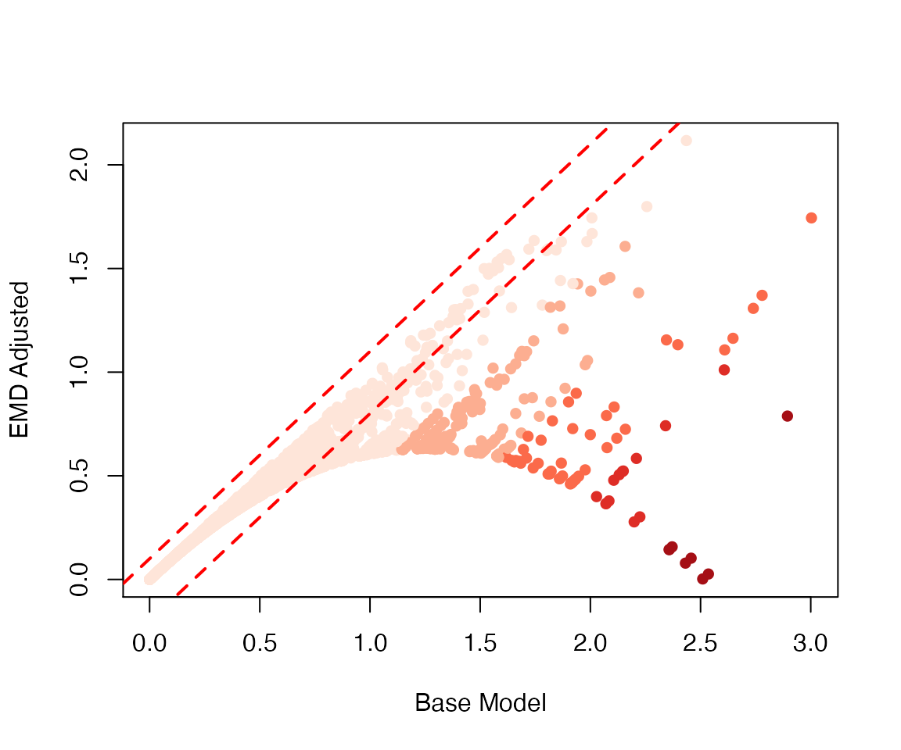

Uncover Cell-Cell Interactions in scRNA-seq
Last Run: May 14, 2022
Source:vignettes/example.Rmd
example.RmdSetup the Matchmaker Object
For this tutorial, we will be analyzing the human decidua single cell RNA-seq dataset from Vento-tormo et al. 2018 Nature. There are 64,734 single cells that were generated using 10X Genomics. The raw data can be found here. We will be using the CellPhoneDB ligands-receptors interaction repository.
A fraction of this data containing 947 ligand and receptor genes and 3000 cells (726 EVT, 953 dS2, 788 dNK1, and 533 dM1) is included in the scMatchmaker package called decidua and the corresponding metadata containing cell type annotations called decidua.annotation. This data has been normalized in logTPM (log-transformed transcripts per million), and it is recommended to start with normalized data. The Normalization function can be used to normalize raw scRNA-seq counts. It provides widely used logTPM normalization, as well as cosine normalization used in Haghverdi et al. 2018 Nature Biotechnology.
Then we load a CellPhoneDB database included in the package called cellphonedb. Alternatively, we can use LoadCellPhoneDB function to load the CellPhoneDB database either locally or from their website.
You can check the Matchmaker object structure and slot information by typing ?'Matchmaker-class'.
# Install scMatchmaker from CRAN.
if (!requireNamespace("scMatchmaker", quietly = TRUE))
install.packages("scMatchmaker")
# Load scMatchmaker.
library(scMatchmaker)
# Load the CellPhoneDB interaction database from URLs.
# This step is optional when using scMatchmaker's preloaded database.
interaction.url = "https://raw.githubusercontent.com/Teichlab/cellphonedb-data/master/data/interaction_input.csv"
gene.url = "https://raw.githubusercontent.com/Teichlab/cellphonedb-data/master/data/gene_input.csv"
complex.url = "https://raw.githubusercontent.com/Teichlab/cellphonedb-data/master/data/complex_input.csv"
interaction.data <- LoadCellPhoneDB(
interaction_input = interaction.url,
gene_input = gene.url,
complex_input = complex.url,
gene.symbol = "gene_name", url = TRUE)
# Initialize Matchmaker object with scMatchmaker preloaded cellphonedb database.
# Missing ligands and receptors will be added with zeros, this step is useful when calculating protein interaction complex later.
decidua.interaction <- Screening(data = decidua, annotation = decidua.annotation[,"annotation", drop = FALSE], interaction = cellphonedb, project_name = "Decidua")
decidua.interaction
## Decidua Matchmaker object:
## 1574 interaction pairs across 3000 cells.
## 0 ligand-recptor pairs across 0 cell-cell interactions calculated.What does the data look like?
# Let's look at the some example ligand and receptor genes in the first twenty cells.
decidua[c("EGFR","TGFB1","EGF"), 1:20]
## 3 x 20 sparse Matrix of class "dgCMatrix"
##
## EGFR . . . . . . . . . . . . . . . . . . . .
## TGFB1 . 1.131673 . . 0.6504162 . . 0.9582769 . 0.7757068 . 0.9077957 1.07289 . 1.122225 1.407436 1.318945 . 0.6545622 1.395667
## EGF . . . . . . . . . . . . . . . . . . . .The dots . in the decidua dataset count matrix represent 0's (no UMI). Because scRNA-seq data contains lots of 0's, Matchmaker uses this sparse matrix notation to store data, interaction strength and p values matrices to save memory. However, if there are not many zero entries, sparse matrix is no longer efficient to save memory. Matchmaker controls for this by the zero_percent parameter. The default is 0.7, that is, when the non-zero entries is above 70% the data will be saved as sparse matrix,
# Let's look at the first six rows of the corresponding metadata.
head(x = decidua.annotation)
## Fetus location final_cluster annotation
## FCA7196224_TCACAAGCAGTTCATG D9 Decidua 7 dM1
## FCA7167223_AATCCAGTCACGCATA D6 Decidua 7 dM1
## FCA7167223_GGACAGAAGTCGATAA D6 Decidua 7 dM1
## FCA7196224_TATCTCAGTTCCCGAG D9 Decidua 7 dM1
## FCA7196224_GTGCATATCCAATGGT D9 Decidua 7 dM1
## FCA7167221_CGAATGTAGACCACGA D7 Decidua 7 dM1
# Let's look at the first six rows of the CellPhoneDB interactions loaded from URLs.
head(x = interaction.data)
## genename_a genename_b id_cp_interaction partner_a partner_b protein_name_a protein_name_b annotation_strategy source subunit_a_1
## 1 ACE2 GHRL CPI-SS085C150CE Q9BYF1 Q9UBU3 ACE2_HUMAN GHRL_HUMAN I2D <NA>
## 2 ACKR1 CCL17 CPI-SS0974EB232 Q16570 Q92583 ACKR1_HUMAN CCL17_HUMAN I2D <NA>
## 3 ACKR2 CCL2 CPI-SS03165AD8C O00590 P13500 ACKR2_HUMAN CCL2_HUMAN curated PMID: 24218476 <NA>
## 4 ACKR2 CCL3 CPI-SS04318D03E O00590 P10147 ACKR2_HUMAN CCL3_HUMAN curated PMID: 24218476 <NA>
## 5 ACKR2 CCL14 CPI-SS045A5FC60 O00590 Q16627 ACKR2_HUMAN CCL14_HUMAN curated PMID: 24218476 <NA>
## 6 ACKR2 CCL13 CPI-SS06B0861F1 O00590 Q99616 ACKR2_HUMAN CCL13_HUMAN curated PMID: 24218476 <NA>
## subunit_a_2 subunit_a_3 subunit_b_1 subunit_b_2 subunit_b_3
## 1 <NA> <NA> <NA> <NA> <NA>
## 2 <NA> <NA> <NA> <NA> <NA>
## 3 <NA> <NA> <NA> <NA> <NA>
## 4 <NA> <NA> <NA> <NA> <NA>
## 5 <NA> <NA> <NA> <NA> <NA>
## 6 <NA> <NA> <NA> <NA> <NA>
# Let's look at the first six rows of the preloaded CellPhoneDB interaction list.
head(x = cellphonedb)
## genename_a genename_b id_cp_interaction partner_a partner_b protein_name_a protein_name_b annotation_strategy source subunit_a_1
## 1 ACE2 GHRL CPI-SS085C150CE Q9BYF1 Q9UBU3 ACE2_HUMAN GHRL_HUMAN I2D <NA>
## 2 ACKR1 CCL17 CPI-SS0974EB232 Q16570 Q92583 ACKR1_HUMAN CCL17_HUMAN I2D <NA>
## 3 ACKR2 CCL2 CPI-SS03165AD8C O00590 P13500 ACKR2_HUMAN CCL2_HUMAN curated PMID: 24218476 <NA>
## 4 ACKR2 CCL3 CPI-SS04318D03E O00590 P10147 ACKR2_HUMAN CCL3_HUMAN curated PMID: 24218476 <NA>
## 5 ACKR2 CCL14 CPI-SS045A5FC60 O00590 Q16627 ACKR2_HUMAN CCL14_HUMAN curated PMID: 24218476 <NA>
## 6 ACKR2 CCL13 CPI-SS06B0861F1 O00590 Q99616 ACKR2_HUMAN CCL13_HUMAN curated PMID: 24218476 <NA>
## subunit_a_2 subunit_a_3 subunit_b_1 subunit_b_2 subunit_b_3
## 1 <NA> <NA> <NA> <NA> <NA>
## 2 <NA> <NA> <NA> <NA> <NA>
## 3 <NA> <NA> <NA> <NA> <NA>
## 4 <NA> <NA> <NA> <NA> <NA>
## 5 <NA> <NA> <NA> <NA> <NA>
## 6 <NA> <NA> <NA> <NA> <NA>
Identify Cell-Cell Interactions with Matchmaking
Before we search for cell-cell interactions, we can optionally downsample the data with Sketching function to reduce the number of cells which may speed up the computation time.
- There are two methods to perform downsampling:
- Downsample proportionally to the cell type frequencies (
downsampling = TRUE). The actual downsampling size may vary slightly due to rounding effects. - Geometric Sketching by Hie et al. 2019 Cell Systems using the input data (
downsampling = FALSE).
- Downsample proportionally to the cell type frequencies (
# Downsampling the number of cells to 1000.
decidua.interaction <- Sketching(object = decidua.interaction, size = 1000, downsampling = TRUE)
decidua.interaction
## Decidua Matchmaker object:
## 1574 interaction pairs across 1001 cells.
## 0 ligand-recptor pairs across 0 cell-cell interactions calculated.Which cells are being "sketched"?
# Show the frist six downsampled cell IDs.
head(x = decidua.interaction@misc$sketch_id)
## [1] 129 509 471 299 270 187
The Matchmaking function is the workhorse that calculates the interaction strengths and p values. It first calculates the interaction strengths using either a base model or an Earth Mover's Distance (EMD) adjusted model (see below). Then it randomly permutes the cell type identities for a number of times (usually 100-1000), and calculates a null distribution for each interacting pairs similar to the CellPhoneDB Python Package. This null distribution will serve as a nonparametric tests to select the significant interactions.
-
Matchmakingwill return two interaction matrices inMatchmakerobject:-
@strengthstores the relative interaction strength. -
@pvaluestores the p values for each interactions.
-
The rows represent cell-cell interacting pairs (dM1|DC1 stands for interaction between dM1 and DC1 cell types) and the columns represent ligand-receptor pairs (i.e. ACE2_GHRL stands for interaction between ACE2 and GHRL genes). Together it reads as dM1 cells express ACE2 molecules and interact with GHRL molecules on DC1 cells. Please note that ligand receptor interactions are direction sensitive, dM1|DC1 has opposite in meaning to DC1|dM1.
-
Matchmakinghas two methods to calculate interaction strength:- Default base model (
emd = FALSE). Interaction strengths are calculated as average mean expressions between interacting ligand and receptor pairs. - Earth Mover's Distance (EMD) adjusted (
emd = TRUE). Interaction strengths are first calculated as average mean expressions the same as the base model, and then adjusted by EMD which takes into account the similarity between ligand and receptor distributions. If the two distributions are similar to each other, the EMD will be small, vice versa. - The EMD model has two modes: weighted (
weighted = TRUE) or unweighted (weighted = FALSE). The weighted model will assign inversely proportional to the expression level, thus, higher. The unweighted model on the other hand will assign equal weights to all the expression levels.
- Default base model (
# Base model with 100 permutations.
ptm <- proc.time()
decidua.interaction <- Matchmaking(object = decidua.interaction, n_perm = 100)
proc.time() - ptm
## user system elapsed
## 1.455 0.174 24.130
decidua.interaction
## Decidua Matchmaker object:
## 1574 interaction pairs across 1001 cells.
## 1574 ligand-recptor pairs across 16 cell-cell interactions calculated.We run the unweighted EMD model with 100 permutations.
# It will take longer time compared to the base model because of the additional EMD adjustment.
ptm <- proc.time()
decidua.interaction.emd.unweighted <- Matchmaking(object = decidua.interaction, emd = TRUE, n_perm = 100, weighted = FALSE)
proc.time() - ptm
## user system elapsed
## 4.669 0.421 273.400We run the default weighted EMD model with 100 permutations.
# It will take longer time compared to the unweighted model.
ptm <- proc.time()
decidua.interaction.emd <- Matchmaking(object = decidua.interaction, emd = TRUE, n_perm = 100)
proc.time() - ptm
## user system elapsed
## 8.785 0.551 267.769
decidua.interaction.emd
## Decidua Matchmaker object:
## 1574 interaction pairs across 1001 cells.
## 1574 ligand-recptor pairs across 16 cell-cell interactions calculated.- Key arguments passed to
Matchmakingfunction include:-
n_permNumber of random permutations. Default is100. -
nbinsNumber of bins to use for Earth Mover's Distance calculation. -
p.adjust.methodp value adjustment method. Default is"BH"for Benjamini & Hochberg method. -
emdWhether to run EMD model. Default is FALSE -
weightedWhether to run weighted EMD model. Default is TRUE. - Additional arguments can be found by typing
?Matchmaking.
-
What do the interaction strength and p values matrices look like?
# Show the first five rows and the first five columns of the strength matrix.
decidua.interaction.emd@strength[1:5,1:5]
## ACE2_GHRL ACKR1_CCL17 ACKR2_CCL2 ACKR2_CCL3 ACKR2_CCL14
## dM1|dM1 0.00000000 0.000000000 0.0000000 0.0000000 0
## dNK1|dM1 0.00000000 0.000000000 0.0000000 0.0000000 0
## dS2|dM1 0.01649279 0.015862922 0.2669892 0.4659861 0
## EVT|dM1 0.01257415 0.009649865 0.4835376 0.7245980 0
## dM1|dNK1 0.00000000 0.000000000 0.0000000 0.0000000 0
# Show the first five rows and the first five columns of the p value matrix.
decidua.interaction.emd@pvalue[1:5,1:5]
## ACE2_GHRL ACKR1_CCL17 ACKR2_CCL2 ACKR2_CCL3 ACKR2_CCL14
## dM1|dM1 1.00000000 1.00000000 1.00000000 1.00000000 1
## dNK1|dM1 1.00000000 1.00000000 1.00000000 1.00000000 1
## dS2|dM1 0.05940594 0.00990099 0.00990099 1.00000000 1
## EVT|dM1 0.17821782 0.04950495 0.00990099 0.00990099 1
## dM1|dNK1 1.00000000 1.00000000 1.00000000 1.00000000 1
If interaction complexes information is provided in the @interaction slot, for example, in the preloaded cellphonedb database, the subunits are listed with column names subunit_a_1, subunit_a_2, subunit_a_3 and subunit_b_1, subunit_b_2, subunit_b_3 respectively.
We can calculate the complex-complex interactions by using Complexing function. It calculates the complex interactions from its subunits with the following options:
-
strength_combMethod to combine subunits strengths.-
min, minimum strength of its subunits (Default). -
average, average strength of its subunits. -
max, maximum strength of its subunits.
-
-
pval_combMethod to combine subunits p values.-
max, maximum p value of its subunits (Default). -
average, average p value of its subunits. -
min, minimum p value of its subunits.
-
# Please note that if Selecting function is called before Complexing, you will need to re-run the Selecting step.
decidua.interaction.emd <- Complexing(decidua.interaction.emd)We can also merge directed (one-way) interactions into undirected (two-way) interactionsc using Merging function. For example, before merging, DC1|dM1 and dM1|DC1 represents two different cell-cell interactions: DC1 expresses ligands and dM1 expresses receptors, versus, dM1 expresses ligands and DC1 expresses receptors. After merging, they will be combined as one undirected cell-cell interaction between DC1 and dM1.
The Merging function takes following arguments similar to Complexing:
-
strength_mergeMethod to merge directed interaction strengths.-
max, maximum strength of directed interactions (Default). -
average, average strength of directed interactions. -
min, minimum strength of directed interaction.
-
-
pval_mergeMethod to directed interactions p values.-
min, minimum p value of directed interactions (Default). -
average, average p value of directed interactions. -
max, maximum p value of directed interactions.
-
# Merge the directed one-way interactions into the undirected two-way interactions.
decidua.interaction.emd <- Merging(object = decidua.interaction.emd)If we want to revert the Complexing or Merging operation, we can use the Resetting function by specifying the by argument with either complex (default) or merge to revert it.
Select Top Interactions
After calculating the interaction strengths and p values. We use Selecting function to filter and select the top significant interactions.
- Aguments passed to
Selectinginclude:- The
strength.pctargument defines the quantile of interaction strength to be selected. The default is 0.1 (top 10% will be chosen). - The
pval.cutoffargument defines the p value cutoff, The default is 0.05 (interaction with p value less than 0.05 will be selected).
- The
# Select the top 10% interactions with p values less than 0.05 in the base model.
decidua.interaction <- Selecting(object = decidua.interaction, strength.pct = 0.1, pval.cutoff = 0.05)
# Select the top 10% interactions with p values less than 0.05 in the EMD model.
decidua.interaction.emd <- Selecting(object = decidua.interaction.emd, strength.pct = 0.1, pval.cutoff = 0.05)The Converting function converts the strength and p value matrices into a long ranked list of interaction candidates. By setting selected = TRUE, it will convert the selected data from the Selecting step.
# Convert the selected interactions in base model.
converted.data <- Converting(object = decidua.interaction, selected = TRUE)
# Convert the selected interactions in EMD model.
converted.data.emd <- Converting(object = decidua.interaction.emd, selected = TRUE)We can subset the cell-cell interactions or ligand-receptor pairs using Subseting function.
# Subset interactions between EVT and dM1.
dc1.m1.interactions <- Subsetting(object = decidua.interaction.emd, ident1 = "EVT", ident2 = "dM1")
# Subset cell-cell interactions involving PGF-FLT1.
pgf.flt1.interactions <- Subsetting(object = decidua.interaction.emd, partner_a = "FLT1", partner_b = "PGF")Finally, we can save the significant (selected) interaction strengths and p-values into csv files using Saving function.
# Save the results.
Saving(decidua.interaction.emd, file_name = "decidua_emd", selected = TRUE)We can also save the analyzed Matchmaker R object.
# Save the Matchmaker object.
saveRDS(object = decidua.interaction.emd, file = "decidua.interaction.emd.rds")What are the top selected interactions?
The top ten interactions in the base model:
# Show the top ten interactions in the base model.
head(x = converted.data, n = 10)
## interactions pairs strength pval
## 1 dM1|EVT CD74_MIF 3.003241 0.00990099
## 2 dM1|dNK1 C5AR1_RPS19 2.894307 0.00990099
## 3 dM1|dM1 CD74_MIF 2.779309 0.00990099
## 4 dM1|dNK1 CD74_MIF 2.739418 0.00990099
## 5 dM1|dS2 CD74_MIF 2.647261 0.00990099
## 6 dM1|dS2 CD74_APP 2.609492 0.00990099
## 7 dM1|EVT C5AR1_RPS19 2.607603 0.00990099
## 8 dNK1|EVT B2M_ALB 2.535686 0.00990099
## 9 dNK1|dS2 B2M_ALB 2.509800 0.00990099
## 10 dM1|EVT B2M_ALB 2.457247 0.00990099The top ten interactions in the EMD model:
# Show the top ten interactions in the EMD model.
head(x = converted.data.emd, n = 10)
## interactions pairs strength pval
## 1 dNK1|dNK1 KLRC1_HLA-E 2.117210 0.00990099
## 2 dNK1|dM1 KLRC1_HLA-E 1.798782 0.00990099
## 3 EVT|EVT FLT1_PGF 1.744274 0.00990099
## 4 dM1|EVT CD74_MIF 1.744064 0.00990099
## 5 EVT|dS2 FN1_ITGB1 1.668484 0.00990099
## 6 dS2|dS2 COL6A2_ITGB1 1.634794 0.00990099
## 7 EVT|EVT FN1_ITGB1 1.629702 0.00990099
## 8 dM1|dS2 PLAUR_ITGB1 1.629599 0.00990099
## 9 dM1|dM1 SPP1_CD44 1.606700 0.00990099
## 10 dNK1|dNK1 KLRD1_HLA-E 1.595239 0.00990099
Visualize Cell-Cell Interactions
scMatchmaker provides three different ways to visualize the interactions:PlotSpot function generates a spot plot either with bars or dots.PlotHeatmap function generates a heatmap plot. PlotNetwork function generates a network plot. PlotScatter function generates a scatter plot for a specific cell-cell interaction pair.PlotHistogram function generates a histogram for a specific ligand and receptor pair.
-
PlotSpotgenerates a spot plot for cell-cell interactions. The size or height of the dot or bar represents the interaction strength. The color of the dot or bar represents the p values. Some useful arguments are listed below:-
which.cellandwhich.genecell-cell or gene-gene interaction name or index to plot. -
typeoption"dot"for dot plot and option"bar"for bar plot. -
orderorder the data. -
low.cutoffandhigh.cutoffCutoff for values to show. -
plot.y.axis,fix.y.axisetc. See?PlotSpotfor details.
-
We use PlotSpot to visualize the first twenty rows and the first ten columns of the interaction @strength and @pvalues.
# Spot plot with bars
plot.bar <- PlotSpot(object = decidua.interaction.emd, which.cell = 1:10, which.gene = 1:10, type = "bar", order = TRUE)
# Spot plot with dots
plot.dot <- PlotSpot(object = decidua.interaction.emd, which.cell = 1:10, which.gene = 1:10, type = "dot", order = TRUE)
cowplot::plot_grid(plot.bar, plot.dot)
-
PlotHeatmapgenerates a heatmap. It takes arguments similar toPlotSpot. In addition, it can provide a summarized view by aggregating interaction data:-
selecteduse@selecteddata if calculated. -
aggregatetype of aggregation to use. Options includecellandgene. -
countedaggregate interaction counts instead of strengths. -
scalescale and center the data to plot. - Additional arguments see
?PlotHeatmapfor details.
-
We use PlotHeatmap to visualize the most interactive cell types by setting aggregate = "cell".
PlotHeatmap(object = decidua.interaction.emd, aggregate = "cell", order = TRUE, selected = TRUE, mar = c(10,10))
-
PlotNetworkgenerates a gene-gene or cell-cell interaction network plot. It takes arguments similar toPlotHeatmap:-
selecteduse@selecteddata if calculated. -
aggregatetype of aggregation to use. Options includecellandgene. -
node.size,node.colorandedge.colorsize and color of the nodes and edges. -
layoutlayout used to plot network (i.e tsne or umap layout). -
directedplots directed network. -
louvainperforms louvain clustering. - Additional arguments see
?PlotNetworkfor details.
-
We use PlotNetwork to visualize the cell-cell interaction network by setting aggregate = "cell".
PlotNetwork(object = decidua.interaction.emd, aggregate = "cell", selected = TRUE, legend.posit = "topleft", legend.breaks = 3)
We can also use PlotNetwork to visualize the gene-gene interaction network by setting aggregate = "gene".
PlotNetwork(object = decidua.interaction.emd, aggregate = "gene", louvain = TRUE, selected = TRUE, filter = TRUE, low.cutoff = 5, node.size = 4, legend.posit = "bottomright")
- The
PlotScatterfunction generates visualization of expression profiles for specific gene-gene interactions among all other interactions in a given pair of cell-cell interaction.
# Visualize ITGB1-PLAUR interactions between EVT and dM1 cells.
PlotScatter(object = decidua.interaction.emd, ident1 = "dM1", ident2 = "EVT", ligands = "ITGB1", receptors = "PLAUR", add.lines = TRUE, point.cex = 2)
-
PlotHistogramgenerates a histogram to visualize the ligand and receptor expressions in interacting cell types. Possible arguments include:-
ligandandreceptorligand and receptor gene names. -
ligand.identandreceptor.identCell types to plot for ligand and receptor. -
nbinsNumber of bins to use for histogram. - Additional arguments see
?PlotHistogramfor details.
-
We use PlotHistogram to visualize the top interacting ligand-receptor pairs in the base model: CD74_MIF and CD74_APP in dM1|EVT and dM1|dS2 cell-cell interactions respectively. We can see that the base model prioritizes higher mean expression values of ligand and receptor pairs, regardless of their variable distributions.
par(mfrow = c(1,2))
# Histogram for CD74 and MIF interaction between dM1 and EVT cells.
PlotHistogram(object = decidua.interaction, ligand = "MIF", receptor = "CD74", ligand.ident = "EVT", receptor.ident = "dM1", nbins = 25)
# Histogram for CD74 and APP interaction between dM1 and dS2 cells.
PlotHistogram(object = decidua.interaction, ligand = "APP", receptor = "CD74", ligand.ident = "dS2", receptor.ident = "dM1", nbins = 25)
We then use PlotHistogram to visualize the top interacting ligand-receptor pairs in the EMD model: FLT1_PGF and KLRC1_HLA-E in EVT|EVT and dNK1|dM1 cell-cell interactions respectively. The results show that the EMD model takes into account the variability in the distributions between ligand and receptor pair. It is not biased towards higher mean expression values in either ligand or receptor. It selects the best "matching" pairs.
par(mfrow = c(1,2))
# Histogram for KLRC1 and HLA-E interaction between dNK1 and dM1 cells.
PlotHistogram(object = decidua.interaction.emd, ligand = "KLRC1", receptor = "HLA-E", ligand.ident = "dNK1", receptor.ident = "dM1", nbins = 25)
# Histogram for FLT1 and PGF interaction between EVT and EVT cells.
PlotHistogram(object = decidua.interaction.emd, ligand = "PGF", receptor = "FLT1", ligand.ident = "EVT", receptor.ident = "EVT", nbins = 25)
Lastly, we compare the base model (x axis) against the EMD model (y axis). We see that the baseline model creates quite a few false-positives (dark red dots in lower right).
plot(x = decidua.interaction@strength,
y = decidua.interaction.emd@strength,
xlab = "Base Model", ylab = "EMD Adjusted",
col = RColorBrewer::brewer.pal(5,"Reds")[cut(decidua.interaction@strength-decidua.interaction.emd@strength,5)],
pch = 16)
abline(-0.2, 1, col = "red", lwd = 2, lty = 2)
abline(0.1, 1, col = "red", lwd = 2,lty = 2)
# R session information.
sessionInfo()
## R version 4.0.3 (2020-10-10)
## Platform: x86_64-apple-darwin17.0 (64-bit)
## Running under: macOS Big Sur 10.16
##
## Matrix products: default
## BLAS: /Library/Frameworks/R.framework/Versions/4.0/Resources/lib/libRblas.dylib
## LAPACK: /Library/Frameworks/R.framework/Versions/4.0/Resources/lib/libRlapack.dylib
##
## locale:
## [1] en_US.UTF-8/en_US.UTF-8/en_US.UTF-8/C/en_US.UTF-8/en_US.UTF-8
##
## attached base packages:
## [1] stats graphics grDevices utils datasets methods base
##
## other attached packages:
## [1] scMatchmaker_0.99.0
##
## loaded via a namespace (and not attached):
## [1] nlme_3.1-151 bitops_1.0-6 matrixStats_0.57.0 fs_1.5.0 doParallel_1.0.16 RColorBrewer_1.1-2 rprojroot_2.0.2
## [8] tools_4.0.3 backports_1.2.1 bslib_0.3.1 R6_2.5.0 irlba_2.3.3 d3Network_0.5.2.1 rpart_4.1-15
## [15] KernSmooth_2.23-18 Hmisc_4.4-2 colorspace_2.0-0 nnet_7.3-14 tidyselect_1.1.0 gridExtra_2.3 mnormt_2.0.2
## [22] compiler_4.0.3 qgraph_1.6.5 fdrtool_1.2.16 textshaping_0.2.1 cli_3.2.0 htmlTable_2.1.0 TSP_1.1-10
## [29] desc_1.4.1 labeling_0.4.2 sass_0.4.0 caTools_1.18.0 scales_1.1.1 checkmate_2.0.0 psych_2.0.12
## [36] pbapply_1.4-3 pkgdown_2.0.2 pbivnorm_0.6.0 systemfonts_0.3.2 stringr_1.4.0 digest_0.6.27 foreign_0.8-81
## [43] rmarkdown_2.13 base64enc_0.1-3 jpeg_0.1-8.1 pkgconfig_2.0.3 htmltools_0.5.2 highr_0.8 fastmap_1.1.0
## [50] htmlwidgets_1.5.3 rlang_1.0.2 huge_1.3.4.1 rstudioapi_0.13 farver_2.0.3 jquerylib_0.1.3 generics_0.1.0
## [57] jsonlite_1.7.2 gtools_3.8.2 dplyr_1.0.2 magrittr_2.0.1 Formula_1.2-4 Matrix_1.3-2 Rcpp_1.0.7
## [64] munsell_0.5.0 reticulate_1.18 abind_1.4-5 lifecycle_1.0.1 whisker_0.4 stringi_1.5.3 yaml_2.2.1
## [71] MASS_7.3-53 gplots_3.1.1 plyr_1.8.6 lavaan_0.6-7 grid_4.0.3 parallel_4.0.3 crayon_1.3.4
## [78] lattice_0.20-41 cowplot_1.1.1 splines_4.0.3 tmvnsim_1.0-2 knitr_1.38 pillar_1.4.7 igraph_1.2.6
## [85] rjson_0.2.20 corpcor_1.6.9 BDgraph_2.63 stats4_4.0.3 reshape2_1.4.4 codetools_0.2-18 glue_1.6.2
## [92] evaluate_0.15 emdist_0.3-1 latticeExtra_0.6-29 data.table_1.13.6 png_0.1-7 vctrs_0.4.1 foreach_1.5.1
## [99] gtable_0.3.0 purrr_0.3.4 cachem_1.0.1 ggplot2_3.3.3 xfun_0.30 glasso_1.11 ragg_0.4.0
## [106] survival_3.2-7 seriation_1.2-9 tibble_3.0.4 iterators_1.0.13 registry_0.5-1 memoise_2.0.1 cluster_2.1.0
## [113] ellipsis_0.3.2